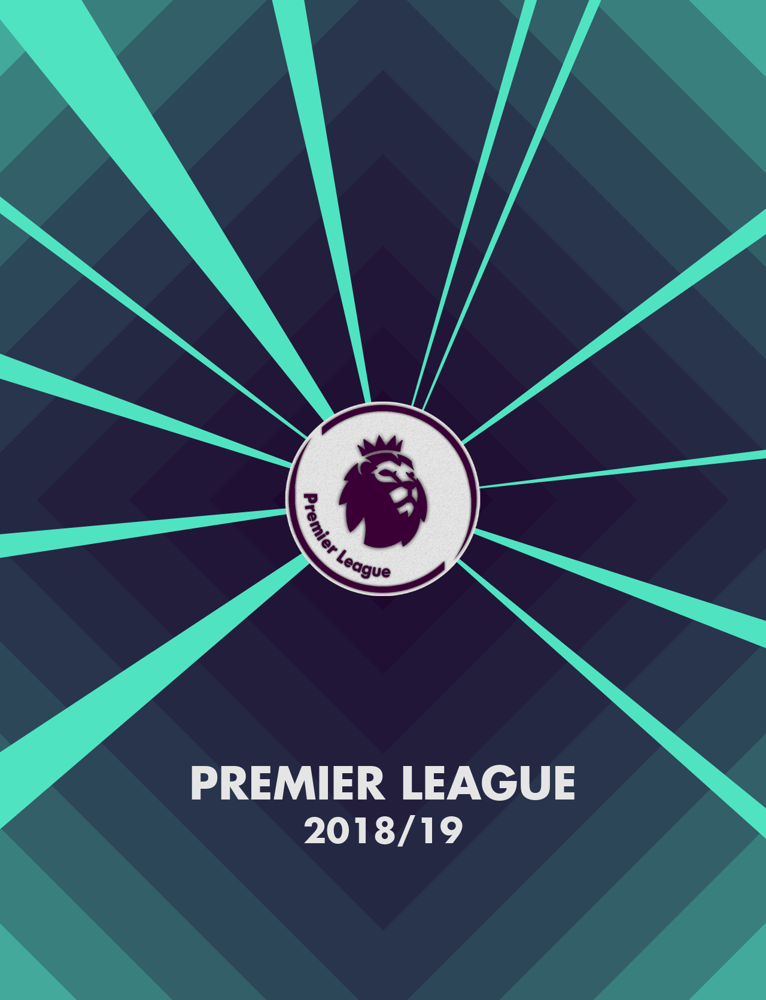
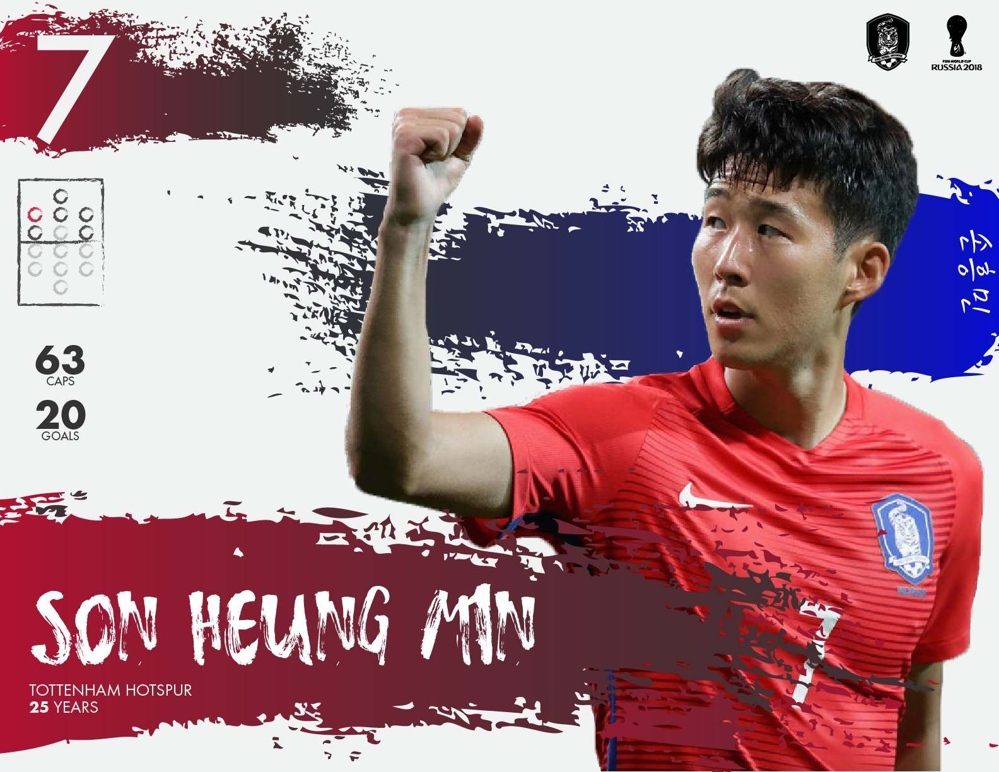

This video is my first venture into Cinema4D and the world of 3D in general. The video tells a story from Timo Werner’s perspective, a newly recruited soccer player from Germany. The camera alternates between POV shots and Television views, showing the game in which Timo Werner scored his first goal for his new team, Chelsea FC. The decision to leave most of the area largely untextured was a conscious choice to highlight the mental focus of the player.
This project initially started in AfterEffects, but ultimately the decision to use 3D objects led to the shift to Cinema 4D. Cinema 4D allowed for new layers of dynamism to be added to the project, as physics and character animations were now possible. This project was largely a learning experience as I got used to the program but I was still able to create something rather elaborate, especially with the post-compositing in AfterEffects. Most of the textures used in Cinema 4D, as well as the motion graphics present, were initially created using Adobe Illustrator.
American Friends of Jamaica
Honoree/Entertainer Intros
In 2019, I stumbled upon the great opportunity of creating something great. Whilst I was working as a social media intern at the nonprofit organization American Friends of Jamaica, I was able to showcase my design skills to the executive director and was effectively made a graphic design intern. The most exciting project I undertook that summer was designing for the 2019 Hummingbird Gala.
The gala held greater meaning than the years prior, as the one and only World Record holder and Olympic Gold Medalist Usain Bolt would be honored at the event. To announce the honorees and the entertainers for 2019’s gala, I created a series of introductions to be posted on The AFJ’s social media platforms, as seen here.
The identity of the 2019 Hummingbird Gala was an elegant mix of black and gold; however, I wanted these introduction cards to stand out from the rest of the promotion materials that were created. I made a bold choice incorporating high contrasting accents to ensure they caught the audiences’ eyes and directed the attention to Usain Bolt, which had the highest chance to catch someone’s attention.
I took a more traditional approach to the entertainer introduction cards, sticking with the gala’s identity of black and gold. Some adjustments were made to the source photos and backgrounds to keep a uniform feel across the two posts.
Hummingbird 2019 Identity
I am personally excited to talk about these because this design is the one that Usain Bolt personally said he liked. They highlighted the presence of Usain Bolt using a silhouette of his signature pose. These banners were used for various social media platforms, as well as at the end of every email that was sent out from our email system, in order to promote the 2019 Hummingbird Gala. These were preliminary designs for merchandise to be sold at the gala. Each design featured all three organizations vital to making this gala happen, as well as a simple design of a hummingbird or the silhouette of Usain Bolt previously used on the social media banners.
Annual Report Booklet
This booklet serves as The AFJ’s annual report for potential investors who are considering donating to the communities in need in Jamaica. It is used to highlight the impact that the nonprofit organization made over the previous year and provide insight for the investors. Using the colors of the Jamaican Flag was considered at one point; however, I decided in the end that basing the palette around hues of blue would provide a more pleasurable reading experience for the viewers.
East Coast Surf Tribe
ECST Logo/Packaging
The logo of East Coast Surf Tribe invokes what it strives to invoke in its practices. Free-flowing, clean waves of the ocean. The negative space found within the letters of “ECST” is reminiscent of designs found in surf culture, adding a layer of depth to the logo.
Some variants of the main logo, keeping the same motif of the waves of the ocean.
This packaging design was used for ECST merchandise such as shirts and stickers. It incorporates the blue color scheme reminiscent of the logo, present in the center of the package design. At the bottom of the design, ECST’s slogan, “Souls to Seas,” is written in a script font that resonates with the waves of the ocean.
Sangs.cc Advertisement
This brand’s logo is a semi-symmetric, geometric “S” shape encased in a border sharing the same gradient fill. This logo was designed to be able to elegantly spin as a 3D object, all while cleanly presenting itself in 2D. This logo also works in two-tone settings, which is vital for many situations in digital interfaces.
My first venture into AfterEffects served as an advertisement of sorts for this branding. The two main themes of this video was the use of lens flares and the use of diamond-shaped panels resembling the border of the logo.
A concept storyboard was also created for an alternative animation. In this concept, the logo would fold itself like an origami. This origami is actually foldable in real life using the steps listed above.


Premier League Visuals
Chelsea Posters
If there was a series of projects to look back upon to see the development of my graphic design skills, it would be this one. Ever since my first interactions with digital creation tools, I made a tradition of making annual roster posters for various soccer teams. To showcase this development, here is the lineup of posters for the team I support, Chelsea FC. The first few posters were made using an online website called Piktochart, before moving on to Adobe Photoshop and Adobe Illustrator. Every year, I would try to implement a new technique I learned over the last year to improve upon the last iteration.
This is the most recent version of the poster, which I turned more into an infographic over the previous iterations. By implementing panel designs prevalent in many modern UIs, I was able to present more information to provide a more in-depth view of the team.
Premier League Posters
Here are some of the other teams’ posters created over the years. Each poster incorporated themes of the teams they are representing.
KFA Posters
Occasionally, I would venture outside club teams and make similar posters for the Korean National Team. To celebrate the roster selection that decided which players will be representing my home country, I created posters for each of the 23 players chosen to take the trip to Russia. I incorporated the colors prevalent on the jersey that Korea would be wearing the tournament, as well as tiger claw marks that represent the national fauna.
Logo Design Projects
Lush Logo Redesign
This is a conceptual redesign of the cosmetic brand Lush’s logo. Currently, Lush is known for their stark black and white identity, which contrasts with their extremely colorful products. The most appealing part of their branding to me is this contrast, which I wanted to incorporate into the logo itself. Taking into account their belief for environmentally friendly products, I incorporated a set of leaves that contrast with the main part of the logo. Here are some variants that can potentially be used. For example, the storefront can have LED signages that change the color of the leaves as needed. Perhaps, the colors can represent the season or the new products they are promoting at the time.
Number Logos
These two logos were created for personal use. They were based on two numbers that are deemed “lucky” in many cultures, especially those of the Eastern countries.
For instance, this geometric logo is created by combining elements of the numbers 2 and 9, and how they can be combined to create the number 7.
This logo’s motif is based on two things: a mobius strip and a whip. Using the fluid shape of the number 8 and its unending nature of it, this logo breaks away from the emerging trend of geometric logos, while being able to be used in a two-tone color scheme.
Sanghoon Hwang
(You can just call me Sang)
My venture into the world of graphic design actually started when my high school French teacher made an offhand comment about a website called Piktochart. Later that week I made an account and started messing around with the tools that they give you. Before I knew it, I spent 2 years making over 50 posters and infographics on my free time.
Upon entering college, I decided to take my interest in graphic design to the next level and started self-learning Photoshop and Illustrator. I’m sure all of us have been here before; there were moments where I would feel incredibly frustrated by my own lack of knowledge, yet filled with excitement knowing what I’ll be able to do in the future.
So just a bit more effort I put in. Within a few years I ended up making things I could not have imagined when I started, including works for the one and only Usain Bolt. I cannot wait to see what I will have created in a few more years.
Need something designed?
I'm available for freelance projects now, and full-time employment starting June 2021.